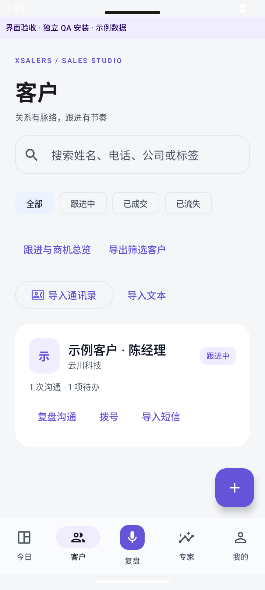
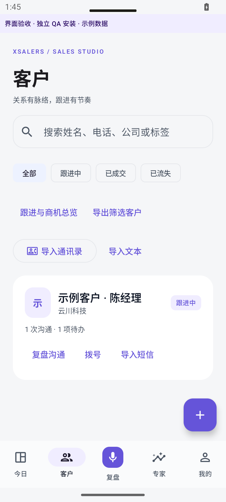
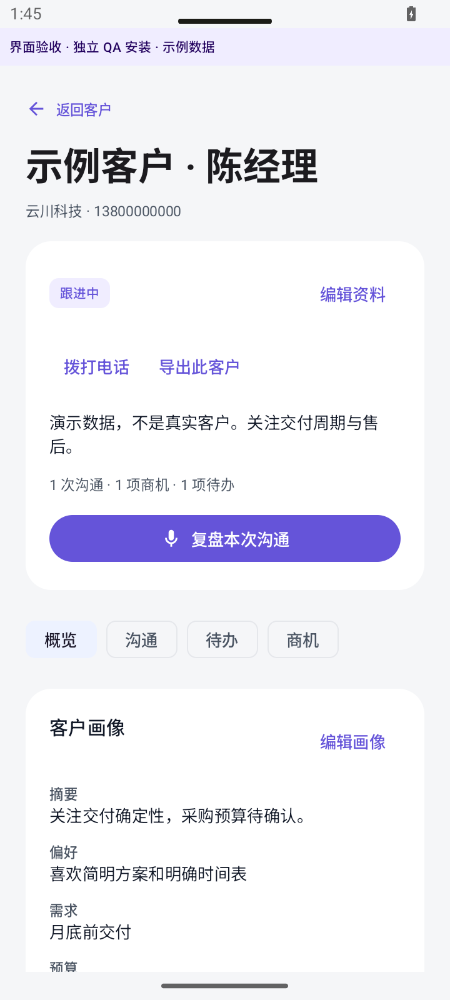
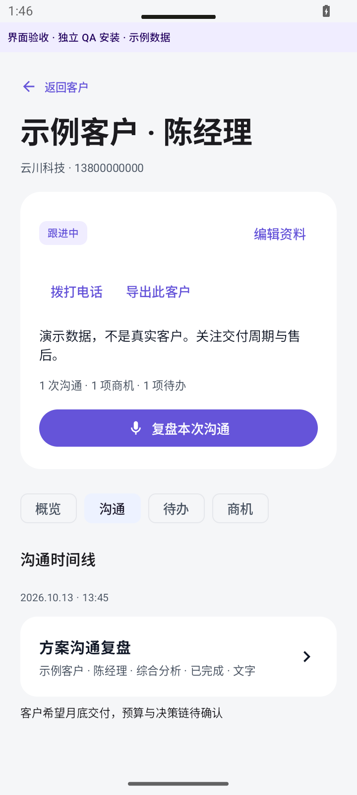
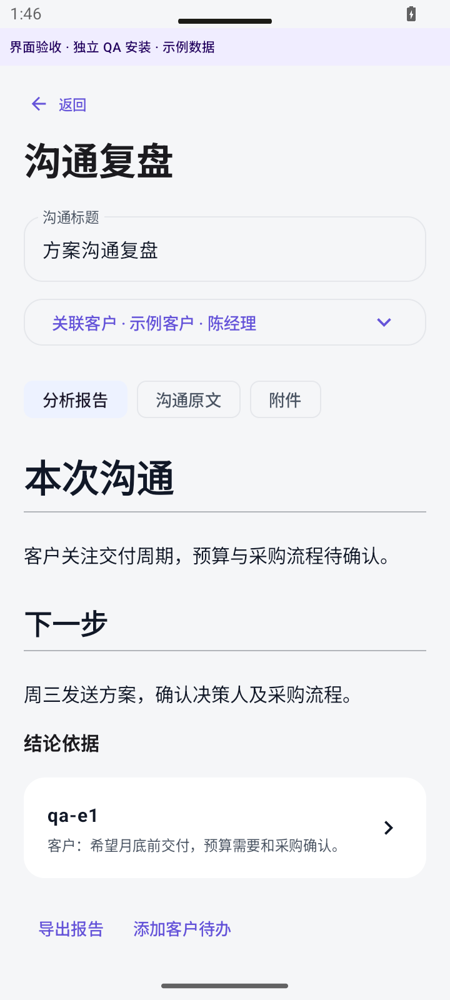
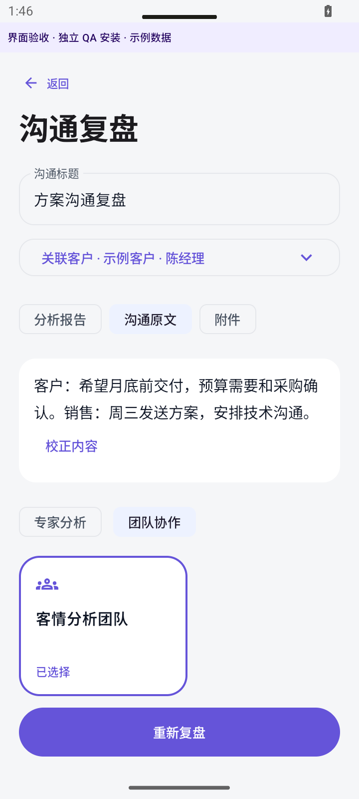
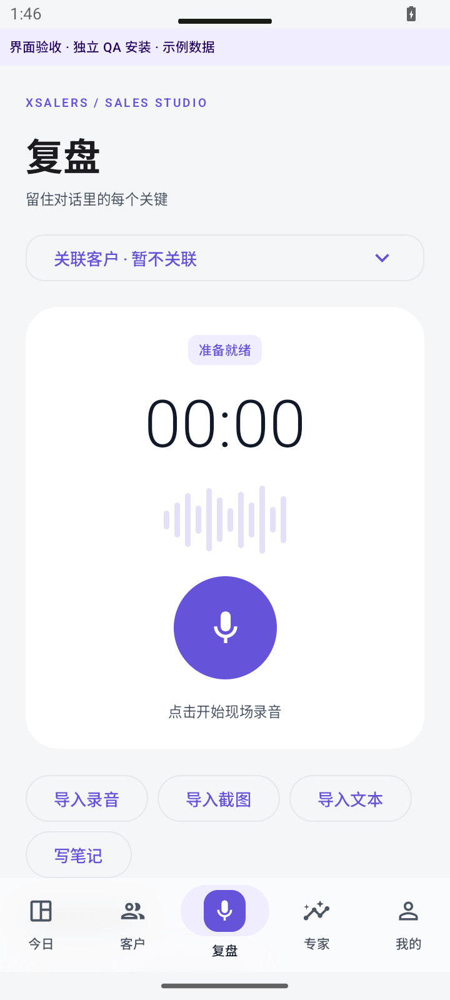
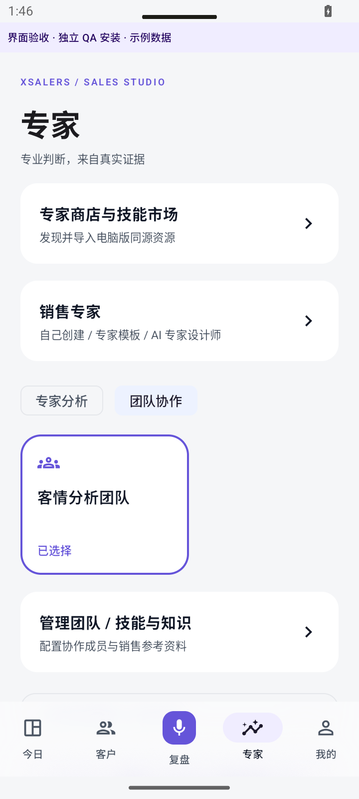

XFAMILY · Android / Desktop / Cloud · 2026-10-13
Xsalers 0.7
以客户为中心的销售复盘
本轮保留独立 Xfriend、Xsalers 安装包，重点重构 Xsalers 客户工作流、长录音后台处理、桌面专家包和云同步。版本号 0.7.0，Android 8.0 及以上。APK 使用延续的调试签名，供直接安装验收。
交付物与安装
两个 APK、源码包及 SHA256 清单位于 D:/xfriend-suite/dist；桌面另有安装包副本。先覆盖安装，保留原账户与数据；不要卸载旧版或清除数据。QA 包使用独立 .qa 包名，不进入交付安装包。
手机与桌面使用同一个云账号，并选择同一个空间。Xsalers「我的 → 云同步」开启自动同步；自动同步在应用打开时运行。离线修改保留，冲突双版本保留并由用户决定。
客户与复盘工作流
| 入口 | 行为 |
|---|
| 客户详情 | 概览、沟通、待办、商机四个分区。客户画像、喜好、需求、预算、时间、决策角色、客户等级可编辑。 |
| 复盘 | 录音、文件、文字、长截图与批量截图导入。选择专家或团队采用横向卡片；底栏由「采集」改为「复盘」。 |
| 沟通详情 | 完整 Markdown 报告、可校正原文、附件、依据引用；音频可播放、拖动、变速。底部迷你播放器方便继续查看资料。 |
| 客户待办 | 按客户关联事项、日期、优先级、状态和原始沟通；支持日期选择和 Android 通知提醒。通知受系统权限和节能策略影响，设备重启后首次打开应用恢复日程。 |
| 导出 | 客户资料 CSV 与沟通报告 Markdown；删除客户保留沟通、待办、商机并解除关联，手机与桌面保持一致。 |
| AI 建议 | 画像、行动建议、成交概率区间及依据以建议保存。用户确认后才进入客户资料；概率是模型判断，不是经过销售结果校准的预测。 |
长录音、后台任务与进度
先将导入音频规范化，再按时长拆分并保留重叠。ASR 分段结果与时间证据持久保存；边界校正保留原始转写，全量证据进入分层汇总与专家分析。模型输出未完整结束时进入可恢复失败，不再把截断内容当成完整报告。
任务脱离当前页面执行，支持恢复、暂停与重试；录音原文件、成功检查点和部分报告保留。页面与通知只显示百分比，不展示段数、阶段或内部队列细节。应用被系统强制停止仍需重新打开恢复，不能承诺不受 Android 生命周期限制。
试用网关 v2 以整次复盘计费，分段和重试复用同一任务。设计额度为五次、单次不超过 60 分钟；自有模型流程最多 4 小时，仍受供应商能力和设备空间影响。新试用网关尚未部署，详见上线状态。
专家、工具和桌面包
保留自定义提示词、专家设计专家、专家团队入口。专家可读取所选客户、关联历史沟通、知识内容和当前证据，输出可确认的行动建议。桌面包的能力声明与资源内容保留；需要电脑执行的工具仍由连接的电脑运行，包内任意脚本不在手机上自动执行。
支持桌面 .xfpack 的 v1/v2、明文和加密导入，提供密码、资源预览、密钥与技能信任选择；可导出已安装包。资源同步保留 _xfpack 扩展字段，支持专家/技能市场检索、预览与确认安装，接口失败明确提示，不显示虚假空市场。
云同步与账号服务
协议涵盖客户、沟通、商机、待办、专家、团队、技能、知识与模型配置；持久 outbox、幂等 operation_id、修订号、删除标记、独立 pull 游标和冲突副本。数据按账号/空间隔离。
默认同步文字和配置；模型密钥仅在该模型明确勾选后上传。录音/图片另行开启，按块续传并校验 SHA-256。媒体服务当前单文件上限 100 MiB；超过上限的原始媒体不上传，不影响此前完成的文字同步。媒体互通尚未完成实际手机—电脑端到端验收。
服务器 43.136.175.19 已部署新账号服务，健康检查 200、未登录同步/市场 401；升级前完成双库及私钥冷备并校验，原私钥保持一致。生产未创建测试账户或修改真实客户资料。公开入口：账号服务健康检查。
桌面端配合
桌面已增加客户工作台与同步适配；本地生产前端已重建。具体文件和联调命令见 D:/octop/docs/customer-sync-desktop-handoff.md。账号服务精确契约见 D:/xfriend-activation/SYNC-API.md，升级与回滚记录见 deploy/SYNC-DELIVERY.md。
桌面应用正式安装器本轮未打包发布；需要电脑端任务继续按其发布流程集成。不要把本机前端构建成功等同于所有电脑用户已更新。
验证与上线边界
构建通过。Xfriend 174 项单元测试、Lint 0 错误/12 警告；Xsalers 174 项单元测试、Lint 0 错误/14 警告。APK 排除 QA 入口，未发现共享模型密钥。详见
验证明细。
已完成模拟器 25 MiB 音频后台导入及旧版加密数据到 Room 的迁移验证。实际模型长录音端到端、真机权限/节能差异、生产专用账号写入和双端媒体播放仍未完成验收。
113.219.170.192 的 SSH 主机密钥与旧记录不同，目前缺少来自服务器控制台的 SHA256 指纹。未绕过身份核验，新试用服务仅完成本地实现和部署包，因此不能宣称五次长录音试用已在线可用。订阅支付仍是预留入口。
Android 模拟器界面验收
以下为实际运行截图，QA 包使用明确标记的示例资料。

suite-0.7-home.png · 隔离 QA 示例资料
suite-0.7-customers.png · 隔离 QA 示例资料
suite-0.7-customer-detail.png · 隔离 QA 示例资料
suite-0.7-customer-records.png · 隔离 QA 示例资料
suite-0.7-report.png · 隔离 QA 示例资料
suite-0.7-transcript.png · 隔离 QA 示例资料
suite-0.7-review.png · 隔离 QA 示例资料
suite-0.7-experts.png · 隔离 QA 示例资料